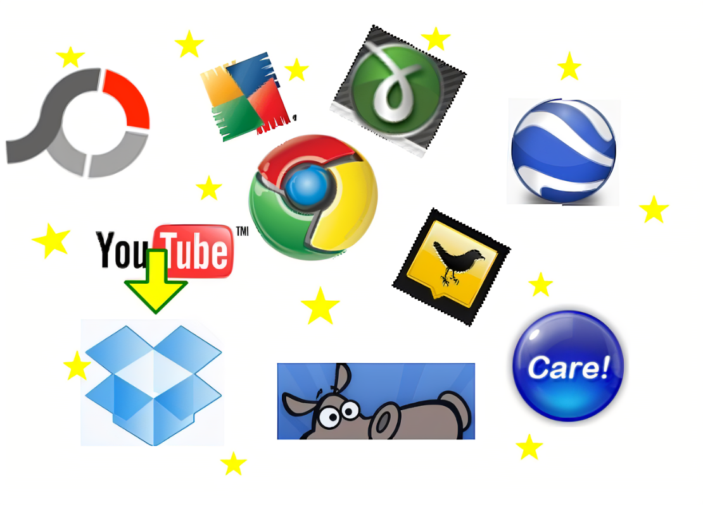

Uživatel nemůže koupit program jako celek se všemi právy k němu, ale může získat pouze licenci (oprávnění) k jeho užívání. Z toho plyne, že nesmí žádným způsobem upravovat toto dílo, pokud k tomu autor nedá svůj výslovný souhlas. Licence je většinou nepřenosná, a proto není možné tuto licenci někomu dalšímu prodat nebo darovat
Při koupi programu běžně získává uživatel oprávnění provozovat program na jednom počítači. V případech hromadného využití programu (firmy, školy ...) stačí koupit jedno balení programu a k němu vícenásobnou licenci pro další počítače, která bývá cenově výhodnější variantou.
Často se používá rovněž označení proprietární software nebo také software s uzavřeným kódem (closed source). Jeho autor upravuje licencí (typicky EULA - End-User-License-Agreement) či jiným způsobem možnosti jeho používání. K takovému software nejsou zpravidla k dispozici volně zdrojové kódy či v nich nelze svobodně dělat úpravy a výsledné dílo distribuovat. Je šířen za úplatu a bývá omezen počet instalací, přenositelnost licence či právo modifikace produktu.
S programem může uživatel pracovat a po určité době je povinnen zaslat jeho autorovi uvedený poplatek. Poté smí program legálně užívat a autor k němu často pošle stručný manuál, případně i novou verzi programu.
Doslova lze název této skupiny programů přeložit jako volné zboží. Program je možné používat a rozšiřovat zdarma, požaduje se pouze dodržování autorských práv. Nesmí se zahrnovat do komerčně šířených programů a nesmí být změněn. Někdy je jako freeware šířen i velmi kvalitní program a po jeho hromadném rozšíření se z něj může stát program šířený komerčně.

© 2022 - Ondřej Lampa IT1